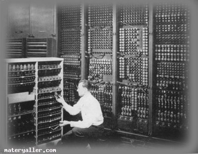

TARİHÇESİ

ERP TEKNOLOJI TARIHCESI
İşletmecilik alanında 2.Dünya Savaşı’ndan sonra egemen
olan sistem yaklaşımı ile birlikte işletmeler çevreleri ile
sürekli ilişki halinde olan açık sistemler olarak ele alınmaya
başlanmış, her alanda olduğu gibi, yaşanan değişimlere ve gelişmelere
paralel olarak işletmelerin kullandıkları bilgi sistemleri ve teknolojilerinde
de günün gereksinimleri doğrultusunda gelişmeler kaydedilmiştir.
İşletmelerin kullandıkları bilgi teknolojileri içerisinde günümüzde gelinen
son nokta olarak bilinen ERP sistemlerinin kökü de aslında 1960’li yıllarda kullanılmaya
başlanan MRP (Malzeme İhtiyaç Planlaması) sistemidir.
MRP NEDİR:
belirlenmiş ana üretim planı ve mevcut stokları göz
önüne alarak, satınalma siparişlerinin teslim tarihinden
geriye doğru hesaplayıp, hangi hammaddenin ne zaman, ne
miktarda gerekeceğini belirlemeye yarar. Bu sayede işletme
sağlıklı hammadde temini yapabilir.
1980’lerde ise MRP’den daha geniş bir yaklaşımla üretim
planlama, programlama ve kontrol faaliyetlerini kapsayan
MRP II (İmalat Kaynakları Planlaması) sistemleri ortaya
çıkmıştır.
MRP || NEDİR:
Malzeme İhtiyaçlarının Planlanmasına ek olarak
işletmeyi bir bütün halde ele alarak çalışır ve bütün
kaynakları (finans, zaman, kapasite vs.) koordineli bir
biçimde kullanmayı amaçlar. MRP II, MRP’nin yaptığı ana
üretim planını daha detaylı günlük ve haftalık planlara
dönüştürmekle kalmamış, bir firmanın satış, satın alma,
envanter yönetimi, üretim planlama ve kontrol, muhasebe,
finansman, maliyetlendirme, kalite yönetimi gibi
fonksiyonlarını tek bir veritabanı üzerinde entegre
olarak sunan bir endüstriyel yönetim sistemi olarak
karşımıza çıkmıştır.
MRP II sistemi 1990’lı yıllara gelindiğinde daha da
geliştirilerek
mühendislik, finans, insan kaynakları, dağıtım, proje
yönetimi gibi bir işletmenin bütün fonksiyonlarını içerecek
şekilde yapılandırılarak ERP sistemleri oluşturulmuştur.
ERP kavramının altında yatan temel fikir, işletme
çapındaki kaynakları
planlamak ve entegre etmek üzere bilgi teknolojilerinin kullanılmasıdır.
Bu entegrasyon sadece fiziksel entegrasyonun (bilgisayar ağları kullanımı vb.) ötesine geçerek sistemlerin entegrasyonunu gerektirmektedir. Ancak bunların yanında iş süreçlerinin, kurallarının ve çıktılarının standardizasyonu da önemli bir unsur olarak karşımıza çıkmaktadır.
Küreselleşmenin doğal bir sonucu olarak değişik coğrafi bölgelerdeki iş faaliyetlerinin dağıtık veri tabanları ve küresel entegrasyon yoluyla yönetilmesi önem kazanmış ve ERP olgunluk çağına girmiştir. İşletme içi bölümler ve işletmeler arası hızlı, gerçekçi ve güncel bilgi akışına duyulan ihtiyaç, böyle bir entegre sistemi modern şirketler için oldukça önemli kılmıştır.
Sistemde işlenen bilgiler ile elde edilen raporlar, organizasyonun plan ve programlarını yönlendirir, karar verme aşamasını kolaylaştırılır. Günümüzde ERP sistemleri, bir işletmenin fonksiyonları arasında, çalışmaları başarıyla yöneten, her türlü raporlama, karar destek altyapılarını oluşturan bütünleşik bir sistem olarak pazardaki yerini buldu. Buna ilave olarak üretilen mal ve hizmetin işletmenin içinde bulunduğu bölgenin dahilinde ve haricinde, ulaştırma çalışmalarının verdiği maliyetlerinin azaltılması ve bunların ne kadar sağlıklı bir şekilde işlediğini takip edebilmek için, ERP sisteminin içerisine tedarikçilerini, taşıyıcılarını, fasoncularını, dağıtım kanallarını ve müşterilerini, hatta mal ve hizmetin ulaştığı son tüketicilerini içerisine alan bir model geliştirildi. Bu modelin ismi Tedarik Zinciri Yönetimi (Supply Chain Management (SCM)) olarak adlandırılır.
ERP sistemi, bünyesinde, Tedarik Zinciri Yönetimi modülünü barındırmasıyla beraber ERPII ismini almıştır. ERP II, içerisinde Müşteri İlişkileri Yönetimi (CRM-Customer Relationship Management) ve İş Zekası (BI-Business Intelligence) kavramlarını barındırmaktadır.